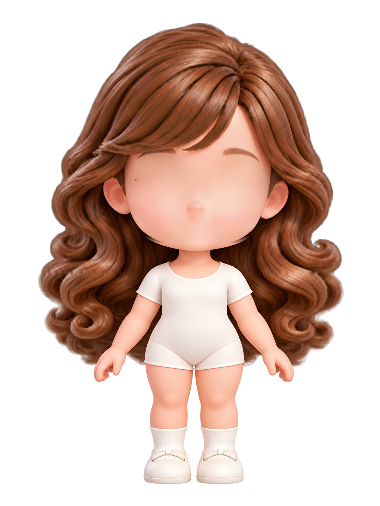
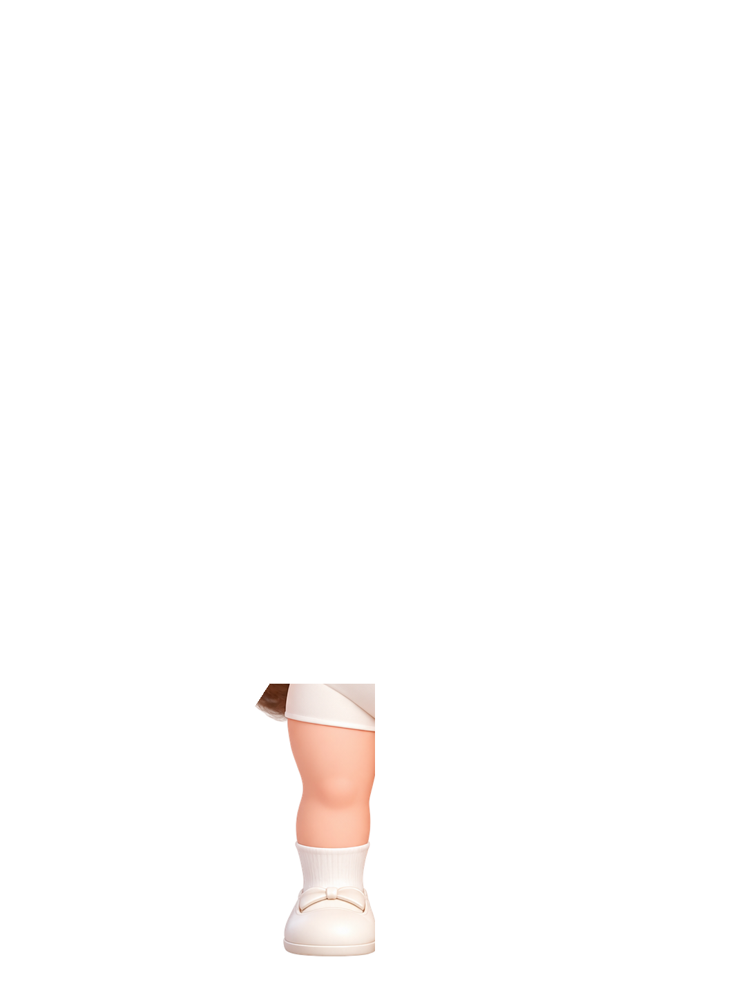
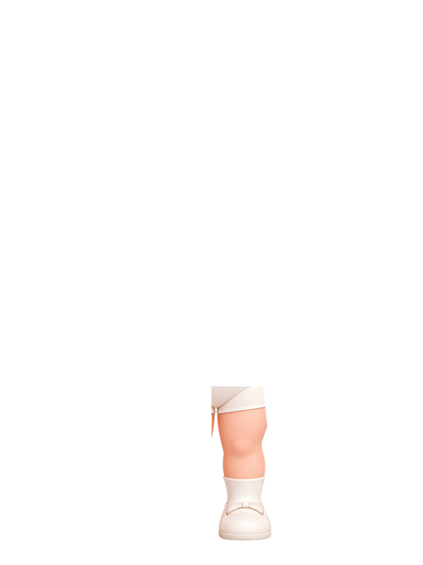
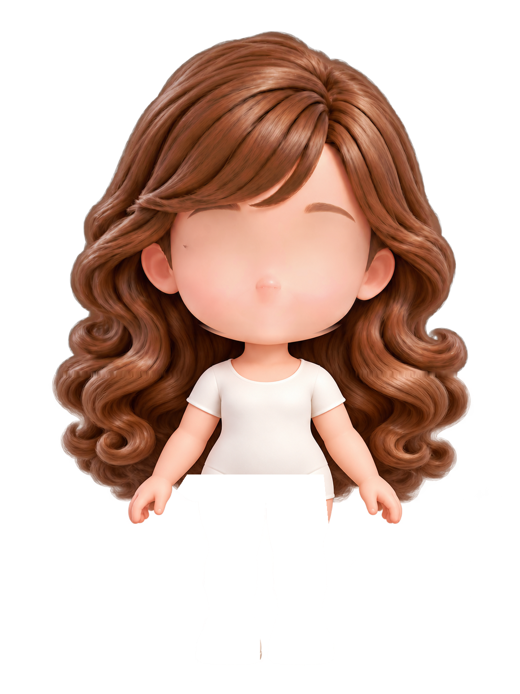
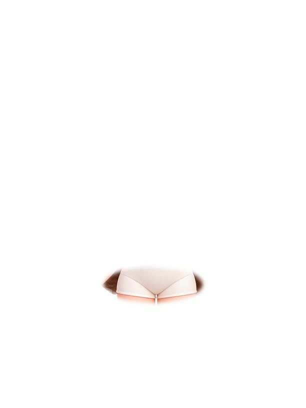
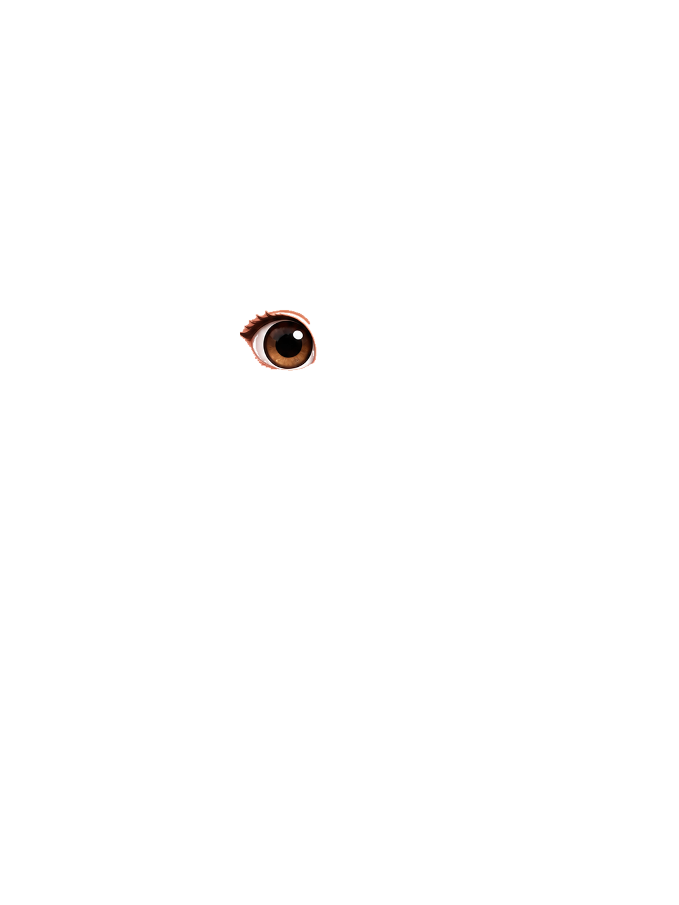
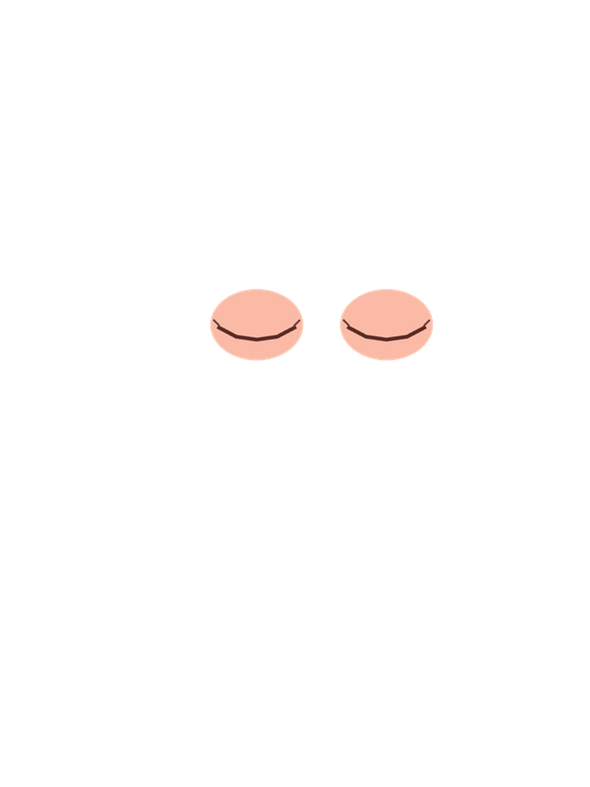
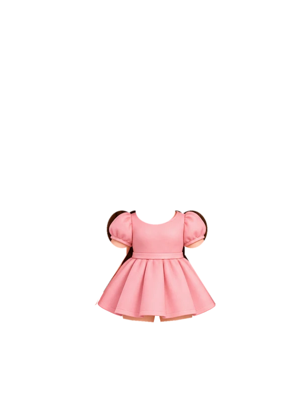
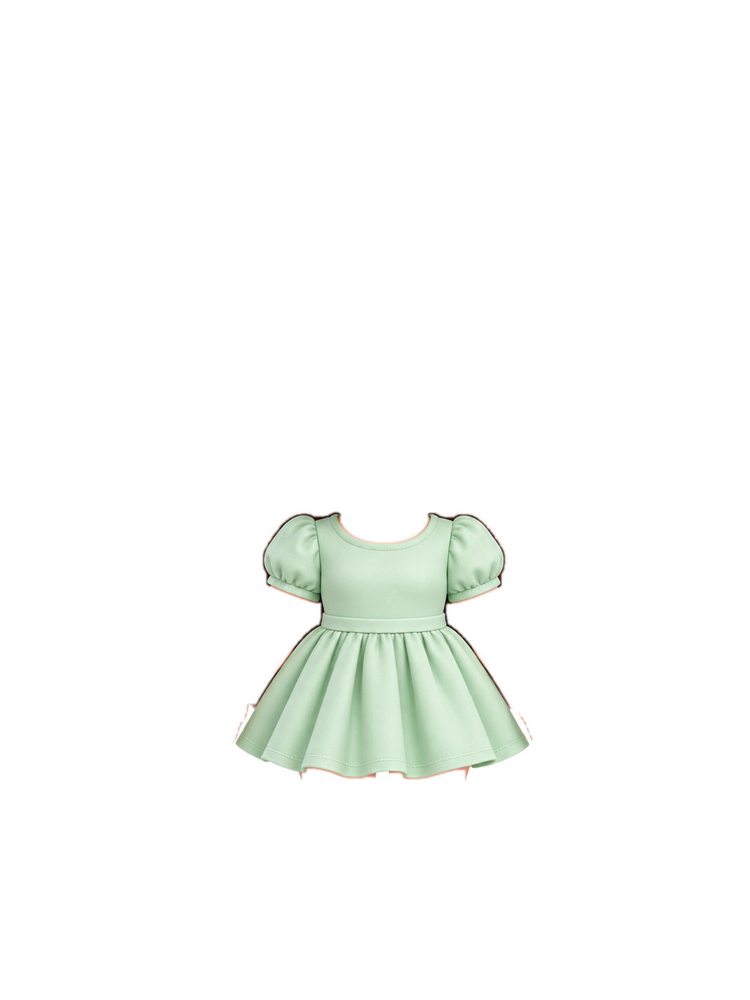
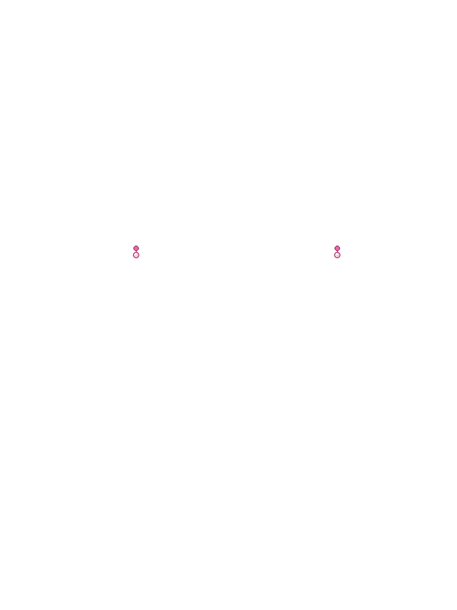

Riki’s full dress-up rig
Clean hair edges, separate body pieces, and fixed anchors that keep clothing and accessories attached correctly.










Outfit
Accessories
Actions
Built for dress-up: shoulders, neck, waist, hips, ears, hair, wrists, hands, and feet now have saved coordinates. Fresh fitted garments use those coordinates, hands stay above the outfit, and the complete assembled rig stays joined while she waves, walks, and jumps.